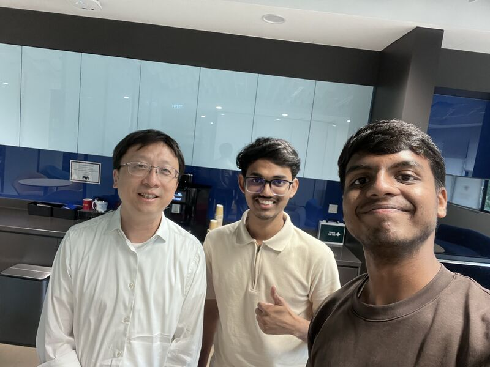
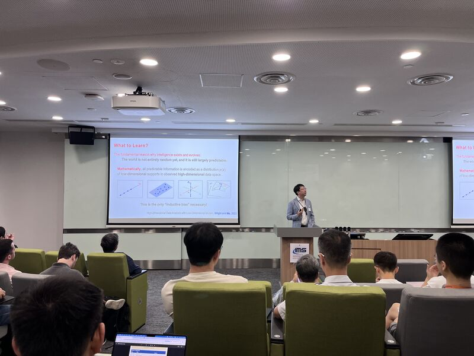
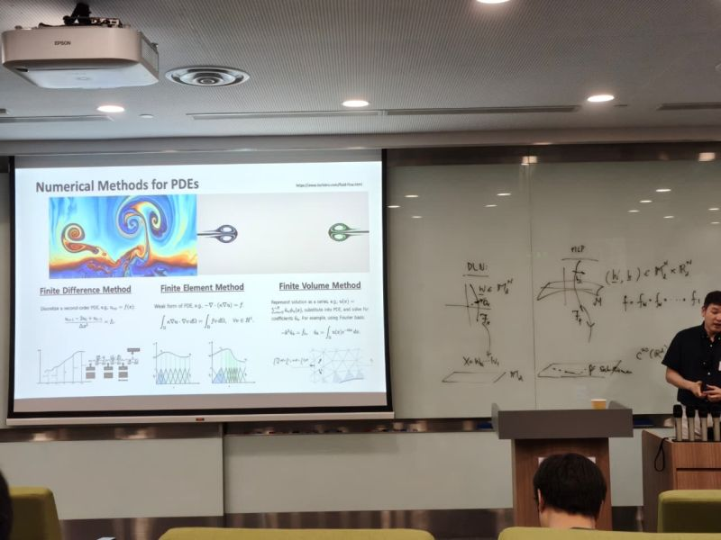
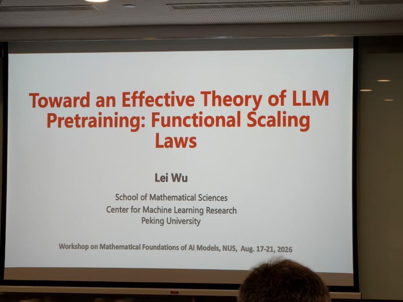
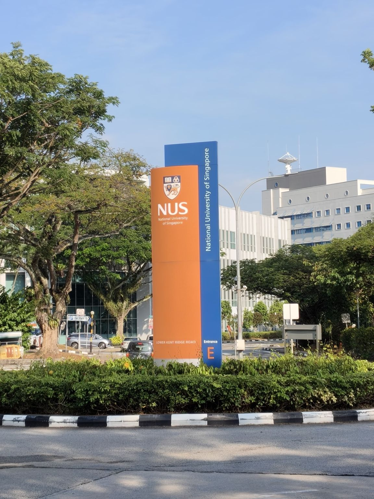

Mathematical foundations of AI models at NUS
I attended the Workshop on Mathematical Foundations of AI Models, hosted by the Institute of Mathematical Sciences at the National University of Singapore. The talks offered a chance to think about the mathematical ideas behind today’s AI models.
A highlight was speaking with Prof. Yi Ma, Director of SCDS and IDS at the University of Hong Kong. We discussed embodied AI, robot perception, and the growing gap between open-source and closed-source language models.
I attended with my friend Vrushank Ahire and had a great time sharing the talks and conversations.




